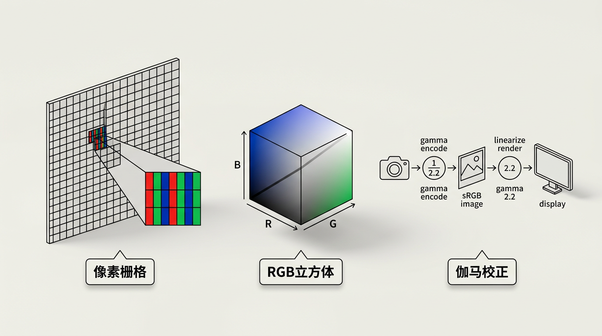
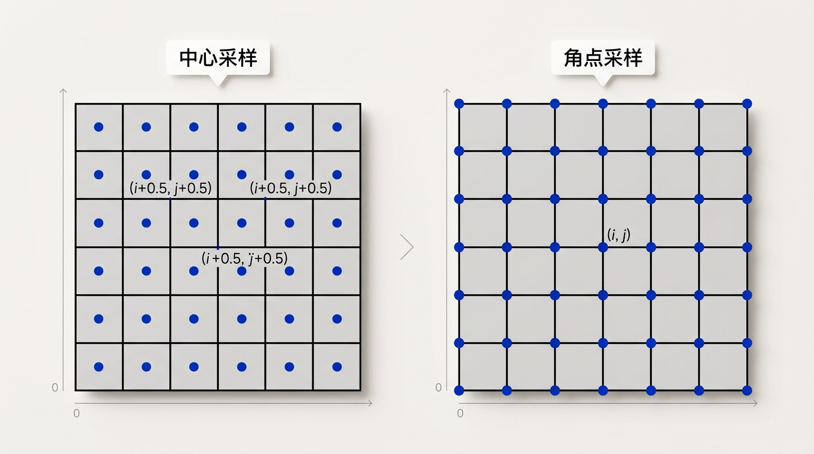
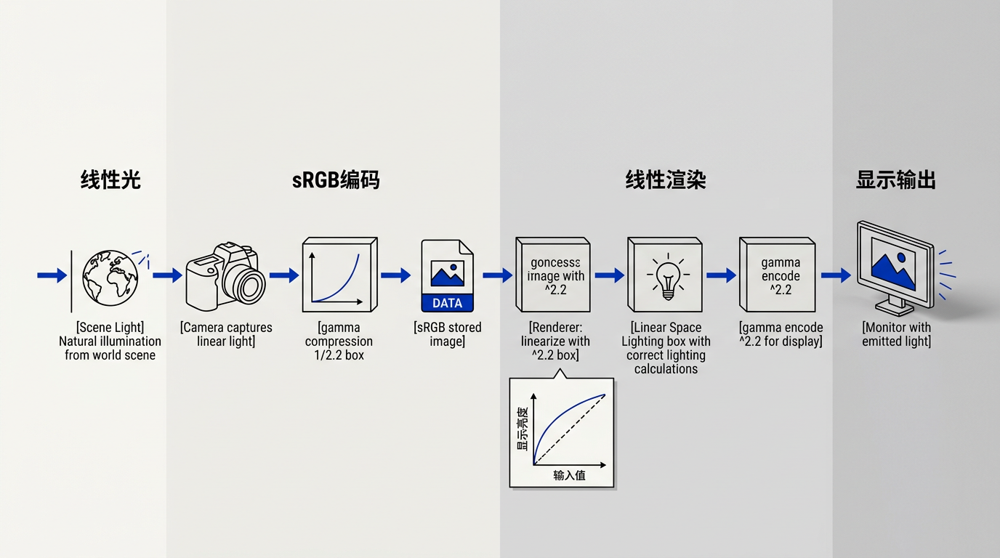
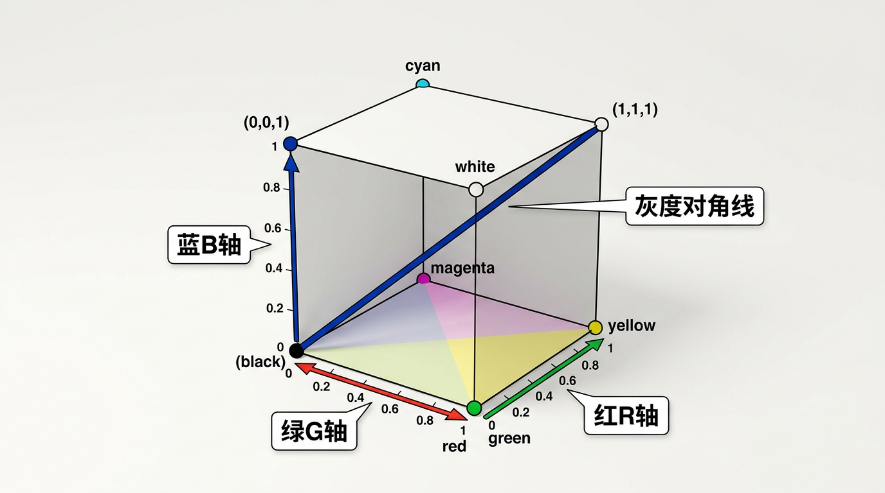

本讲义基于 Steve Marschner & Peter Shirley 所著《虎书》（Fundamentals of Computer Graphics）第5版第3章（p.80-95）光栅图像。
图像的底层表示——像素、RGB颜色空间、Alpha合成、伽马校正、图像存储格式。所有显示设备（LCD/打印机/相机）都是光栅设备。
本版插画采用 Guizang 材质插画风格重新绘制。

现代数字图像几乎无一例外地以光栅（raster）形式显示——即一个矩形的像素阵列。光栅显示器将图像呈现为像素的矩形阵列。"像素"（pixel）是"图像元素"（picture element）的缩写。一个典型的例子是平板电脑显示器或电视，它有一个矩形排列的小型发光像素，每个像素可以独立设置为不同颜色，以创建任意所需的图像。不同的颜色通过混合不同强度的红、绿、蓝光来实现。本章介绍光栅图像的基本概念：光栅显示设备如何工作、像素如何表示颜色、它们如何存储在内存中，以及它们如何被组合和显示。这些概念构成了从照片编辑到实时渲染的几乎所有图形应用的操作基础。
大多数打印机——如激光打印机和喷墨打印机——也是光栅设备。它们基于扫描：虽然没有物理像素网格，但图像通过在网格上选定位置逐一沉积墨水来按顺序生成。（打印机的颜色更复杂，涉及至少四种颜料的混合。）光栅在图像输入设备中也普遍存在。数码相机包含一个由光敏像素组成的图像传感器网格，每个像素记录落在其上的光的颜色和强度。台式扫描仪包含一个线性像素阵列，在扫描页面时横扫而过，每秒进行多次测量以生成像素网格。因为光栅在设备中如此普遍，光栅图像也成为存储和处理图像的最常见方式——也可能正是因为光栅图像如此便捷，光栅设备才如此普遍。
光栅图像本质上是一个二维数组，存储每个像素的像素值——通常是以红、绿、蓝三个数字表示的颜色。不过，我们并不总是希望将存储的图像逐像素映射到显示器。我们可能需要改变图像的大小或方向、校正颜色，甚至将图像贴在运动的三维表面上。即使在电视中，显示器的像素数也很少与所显示图像的像素数相同。这些考虑打破了图像像素与显示像素之间的直接联系。最好将光栅图像视为所显示图像的设备无关（device-independent）描述，将显示设备视为对该理想图像的一种近似方法。
光栅图像 vs 矢量图像：光栅图像就像一面马赛克瓷砖墙——整面墙由固定数量的小方块组成，要改变图案只能逐块更换。你无法让一幅马赛克画"放大到无限清晰"，因为瓷砖的尺寸是固定的。与此相对，矢量图像则像是一份建筑图纸——它存储"画一个半径为 5cm 的圆，圆心在 (10, 20)"这样的指令，而不是逐点描述图像。图纸可以在任何比例下精确打印，但最终必须"施工"（光栅化）才能在屏幕上显示。这就是为什么文字和 logo 通常用矢量格式（如 SVG），而照片用光栅格式（如 JPEG）。
除了使用像素数组外，还有其它描述图像的方法。矢量图像（vector image）通过存储形状的描述——由直线或曲线界定颜色的区域——来描绘图像，而不涉及任何特定的像素网格。本质上，这相当于存储显示图像的指令，而非显示它所需的像素。矢量图像的主要优势是分辨率无关，可以在非常高分辨率的设备上良好显示。对应的缺点是它们必须先被光栅化才能显示。矢量图像常被用于文字、图表、机械图纸等要求清晰度和精确度但不涉及照片级图像和复杂着色的应用场景。
在抽象地讨论光栅图像之前，先看看它们实际如何显示的底层物理原理是有启发的。现代计算机图形学的最终输出显示在光栅显示设备（raster display devices）上——由称为像素的独立可控光点组成的矩形阵列显示器。熟悉的光栅设备可以归入一个简单的层次结构：
这些设备经历了漫长的演变：从早期的阴极射线管（CRT）显示器——电子束逐行扫描荧光屏使磷光体发光——到今天的液晶显示器（LCD）和有机发光二极管（OLED）屏幕，它们使用薄膜晶体管矩阵直接控制每个像素。在 LCD 中，液晶分子在电场作用下改变取向，控制背光通过偏光片和彩色滤光片的光量。OLED 则更进一步——每个子像素本身就是一个微小的有机发光二极管，无需背光，因此可以实现真正的黑色（关闭时完全不发光）和更高的对比度。
为什么像素必须是离散的？连续变化的模拟信号（如自然界的光场）理论上可以无限细分，但数字系统必须在某个粒度上对它们进行采样。像素就是这个采样的最小单位。如果像素做得无限小，那么存储和传输的数据量将趋于无穷。离散化是一种必然的工程权衡——选择足够小但又可管理的像素大小，使得人眼在正常观看距离下无法分辨单个像素。这就是为什么 300+ ppi 的"视网膜"屏幕看起来是连续的：超过了人眼角分辨率的极限（约 60 角秒，即 1/60 度）。
无论底层技术如何，每个像素至少包含三种可以独立设置强度的彩色光发射器——红、绿、蓝（RGB）。在典型的 LCD 显示器中，每个像素由三个子像素（subpixel）组成，分别过滤红光、绿光和蓝光的彩色滤光片。这些发射器排列得足够紧密，以至于在正常观看距离下人眼无法分辨各个子像素，而是将它们混合为单一颜色。常见的子像素排列包括RGB 条纹排列（垂直红-绿-蓝条纹，在桌面显示器和笔记本电脑中最普遍）和Pentile 排列（在 OLED 面板中使用，交替排列红-绿和蓝-绿子像素对，绿色子像素数量是红/蓝的两倍，因为人眼对绿色最敏感）。这种依赖于人眼有限角分辨率的空间混合，与第 19 章中讨论的彩色印刷半色调原理相同。
常见的分辨率（resolution）以每英寸像素数（PPI, pixels per inch）衡量，范围从高端智能手机的约 300–500 ppi，到桌面显示器的约 90–110 ppi，再到大型电视的约 50–80 ppi。绝对像素数也在不断增长：HD（1920×1080，约 2 百万像素）、4K（3840×2160，约 8.3 百万像素）、8K（7680×4320，约 33 百万像素）。这种分辨率的军备竞赛推动了 GPU 处理能力和显示带宽的不断提升。
显示器的另一个关键参数是刷新率（refresh rate），以赫兹（Hz）为单位，表示图像每秒重绘的次数。60 Hz 长期以来是标准，但 120 Hz 和 144 Hz 在游戏显示器中越来越普遍，因为更高的刷新率可以显著减少运动模糊并改善感知响应速度。虚拟现实（VR）头显需要 90–120 Hz 来避免晕动症——当显示刷新落后于头部运动时，视觉与前庭系统之间的滞后会引发不适。值得注意的是，高刷新率本身并不能消除闪烁——图像的频率内容必须保持在由奈奎斯特-香农采样定理（第 9 章中讨论）决定的显示器刷新率所设定的限制范围内。
颜色显示还有另一个重要方面：非线性。几乎所有现代显示器都接受数字输入值，但发出的光强度与输入电压不成线性关系。这种关系——被称为显示器的伽马（gamma）——对于理解如何正确存储和显示图像至关重要，这将在第 3.2.2 节中详细讨论。
光栅图像是一个以像素值存储的二维矩形数组。在实践中，这通常实现为一个二维数组（或一维数组加上跨度信息），其中每个条目对应一个像素。在最抽象的层面上，光栅图像可以被看作一个函数 I(x,y)：R² ↦ V，其中 V 是像素值的集合（例如 RGB 三元组）。该函数在连续坐标 (x,y) 上定义，但仅在一个离散的矩形网格上被采样。
像素网格 → 坐标纸上的采样点：想象你在一张坐标纸上画一条连续的曲线 y = sin(x)。现在你只在整数 x 坐标上用铅笔点一个点——这就是"采样"。光栅图像的原理完全相同：连续的现实世界（光场）被映射到规则的网格采样点上。网格越密（分辨率越高），重建的图像越接近原始连续函数。但无论网格多密，它始终是离散的——就像无论坐标纸的格线画得多细，它也不是真正的连续直线。
像素被假设为在图像平面上以规则网格排列。这个网格的几何并不像看起来那么简单：在将连续图像转换为光栅时，需要决定每个像素的采样位置。这被称为像素约定（pixel convention）。两种最常见的约定是：
像素中心约定更直观且更常用——它自然地避免了在边界处出现"半个像素"的偏移。然而，这两种约定之间的差异会在图像重采样操作（如缩放和旋转）中引入系统性错误，如果不一致地处理的话。例如，在图形 API 中，DirectX 使用像素中心位于整数坐标的约定（像素 (i,j) 覆盖区域 [i−0.5, i+0.5]×[j−0.5, j+0.5]），而 OpenGL 使用像素左下角位于整数坐标的约定（像素覆盖 [i, i+1]×[j, j+1]）。两者之间的转换涉及到精确的 0.5 像素偏移。
像素中心 vs 角点：真的只是 0.5 的差异吗？乍看之下，这两种约定只差半个像素的偏移，似乎无关紧要。但当图像被缩放、旋转或在多个软件之间传递时，这个偏移会被累积放大。想象将一张 4×4 像素的小图放大到 256×256——如果缩放时假设了错误的像素约定，整个图像会产生 32 个像素的系统性位移。这就是为什么专业图像处理管线（如电影后期制作中的 ACES 色彩管线）必须明确规定像素约定。在实际项目中，要确保纹理坐标 0 和 1 映射到的是像素边缘还是像素中心，保持一致。

像素通常存储为无符号 8 位整数——每个 RGB 通道范围从 0 到 255（即一个字节）。值 0 表示暗（无光），255 表示该通道的最大强度。这是消费级图像和显示器的标准。对于 8 位/通道，每个像素需要 3 字节（不含 alpha 通道时为 24 位），可表示约 1670 万种离散颜色——通常足以避免在平滑渐变中出现可见的条带伪影（banding artifacts），尽管在暗色区域和宽色域显示器上并非总是如此。
更精确地说，在 [0,1] 范围内，8 位图像的可能值为 0, 1/255, 2/255, ..., 254/255, 1。注意分母是 255 而非 256——虽然是奇数，但能精确表示 0 和 1 很重要。
然而，对于物理光照计算和高动态范围（HDR, high dynamic range）图像，8 位整数不够用。场景中的真实辐射度值跨越多个数量级——从深阴影到明亮的镜面高光——而 256 个级别无法充分表示这一范围。因此，在渲染管线中，像素通常存储为 16 位半精度或 32 位单精度浮点数。浮点表示提供了巨大的动态范围（从约 10⁻³⁸ 到 10³⁸），同时保持良好的相对精度。仅一张一千万像素的照片在 32 位浮点 RGB 格式中就会消耗约 115 MB RAM——这解释了为什么图像的内存和带宽始终是稀缺资源。
为什么需要 HDR？在现实世界中，太阳的亮度可达 10⁹ cd/m²，而一张白纸在室内只反射约 100 cd/m²——相差 7 个数量级。8 位图像只能表示 256:1 的对比度，这意味着要么太阳被截断为纯白，要么阴影被截断为纯黑。HDR 浮点格式可以同时保留高光和阴影的细节，这在进行色调映射（tone mapping）时至关重要——色调映射是将 HDR 图像压缩到 LDR 显示器上同时保留感知细节的艺术与科学。
以下是各种像素格式及其典型应用：
减少用于存储每个像素的比特数会导致两种特征性伪影：裁剪（clipping）——当原始亮度超过最大值时被截断为最大可表示值；以及量化伪影（quantization artifacts，或称 banding）——当需要将像素值舍入到最近的可表示值时引入可见的强度或颜色跳变。条带化在动画和视频中尤其隐蔽——在静止图像中可能尚可接受，但当条带来回移动时会变得非常显眼。
所有现代显示器接受像素"值"的数字输入，并将该输入转换为某个强度的可见光。然而，这种转换有一个关键的特性：显示的强度与输入值不成线性关系。对于我们的目的，我们可以将纯黑视为"关"，完全亮视为"白"。我们假设像素颜色的数值描述在 0 到 1 之间——黑是 0，白是 1，介于黑白之间的灰色是 0.5。注意这里的"一半"指的是来自像素的物理光量，而非人眼感知的外观。人类对强度的感知是非线性的，这不属于当前的讨论范围；详见第 19 章。
要在显示器上产生正确的图像，有两个关键问题必须理解。首先是显示器对输入是非线性的。例如，给显示器三个像素分别输入 0、0.5 和 1.0，实际显示出来的强度可能是 0、0.25 和 1.0（关闭、四分之一全亮、完全亮）。作为对这种非线性的近似描述，显示器通常以一个 γ 值（gamma value）来表征。这个值就是以下公式中的自由度：
displayed_intensity = (maximum_intensity) × a^γ (3.1)
其中 a 是介于 0 和 1 之间的输入像素值。例如，如果一个显示器的伽马值为 2.0，输入值为 a = 0.5 时发出的光强度仅为最大值的 0.5² = 0.25，即四分之一。注意 a = 0 映射到零强度，a = 1 映射到最大强度，无论 γ 取何值。用 γ 来描述显示器的非线性只是一个近似；我们不需要极高的精确度来估计一个设备的 γ。一个直观判断非线性的好方法是：找到一个 a 值，使显示器发出的光看起来是纯黑和纯白之间的一半——这个 a 值与 0.5 的偏差就反映了 γ 的大小。
伽马 → 音量旋钮的非线性：想象一个老式收音机的音量旋钮。如果你把旋钮拧到"5"（0-10 的刻度中间），你期望听到的是最大音量的一半吗？实际上，很多旋钮在低音量区每格变化很小，高音量区每格变化很大——这就是一种"伽马"。或者更日常的例子：手机亮度滑块——从 0% 拉到 50%，屏幕已经很亮了；从 50% 拉到 100%，亮度增加的感觉没那么明显。这是因为制造商已经把滑块设计成感知均匀的了，而背后正是伽马映射在起作用。
为什么会有这种非线性？一个重要的历史原因是 CRT 显示器的物理原理。在 CRT 中，电子枪发射的电子束轰击荧光屏产生光，而发出的亮度与电子枪栅极电压的约 2.5 次幂成正比——纯属物理耦合。这意味着早期电视摄像机在传输前天然地进行伽马压缩（约 1/2.2），而 CRT 显示器天然地在接收端进行伽马展开——一个偶然但优雅的端到端系统，后来被数字标准继承。现代 LCD 和 OLED 面板通过电子方式模拟类似的伽马响应，以保持兼容性。
伽马校正真的只是为了兼容 CRT 吗？并非如此。即使显示技术变得完全线性，我们仍然需要感知编码。原因是人类对亮度的感知本身就是非线性的——人眼能检测到暗区的微小绝对变化，但在亮区需要更大的变化才能注意到差异（遵循韦伯-费希纳定律，大致为对数关系）。伽马编码（γ ≈ 2.2）恰好将更多比特分配到暗区——人眼对暗区更敏感——实现了感知上近似均匀的量化。如果使用线性编码，8 位（256 个级别）会在暗区产生严重的条带化伪影，因为相邻两个级别的物理亮度差在暗区对人眼来说太明显。所以，伽马是一种有意的感知压缩——它不是 bug，而是特性。
理解这种非线性的一个等价方式是认识到大多数数字图像已经为在 γ ≈ 2.2 的显示器上观看而进行了伽马编码（gamma encoded）。例如，数码相机捕获线性光强度，但在存储为 JPEG 之前应用了大约 1/2.2 的伽马压缩。这个值 2.2 是消费级显示器事实上的标准，并被编码在 sRGB 颜色空间标准中——该标准规定了一个近似 γ ≈ 2.2 的传递函数。sRGB 标准远不止伽马值：它精确定义了 RGB 原色的色度坐标、白点（D65，即 6500K 日光），以及将线性光值转换为非线性 8 位编码的确切传递函数。
真实的 sRGB 传递函数不是纯幂函数——它在暗区有一个线性段来避免零点附近斜率为零（这会引起数值问题）。确切的转换公式为：
线性 → sRGB（编码）： if linear ≤ 0.0031308: sRGB = 12.92 × linear if linear > 0.0031308: sRGB = 1.055 × linear^(1/2.4) − 0.055 sRGB → 线性（解码）： if sRGB ≤ 0.04045: linear = sRGB / 12.92 if sRGB > 0.04045: linear = ((sRGB + 0.055) / 1.055)^(2.4)
在大多数实践中，简化为纯 2.2 幂函数（编码: γ^(1/2.2)，解码: γ^2.2）的误差在约 1% 以内，已足够使用。
为什么着色器要在线性空间中计算？假设你在着色器中计算两个光源的总亮度：光源 A = 0.6，光源 B = 0.6。如果这些值处于 sRGB 空间，将它们相加以得到最终亮度在物理上是错误的——1.2 的 sRGB 值不等于 2 个单位光能量之和。正确的做法是：先将 A 和 B 都解码到线性空间（A_linear ≈ 0.33, B_linear ≈ 0.33），然后相加得到 0.66，最后编码回 sRGB（约 0.83）。这个例子虽然简单，但量级相同的错误会污染所有光照计算——阴影偏暗、高光过饱和、半透明混合不正确。规则很简单：纹理采样→解码，光照计算→线性空间，输出→编码。
这种编码方案的影响遍及图形学。在渲染时，着色器在线性空间中操作——光照计算假设光能量是线性相加的。然而，输入纹理（照片、绘制的颜色）通常以 sRGB 编码存储。因此，在着色器中使用纹理之前，它们必须通过应用逆 sRGB 传递函数（大致为 ^2.2）转换为线性空间。类似地，渲染输出在发送到显示器之前必须进行伽马编码。GPU 在硬件中支持这种转换：将纹理标记为 sRGB 格式（如 GL_SRGB8_ALPHA8）会自动处理采样时的解码和写入帧缓冲区时的编码，零性能开销。忽视伽马校正的后果是严重的——在非线性空间中进行线性数学运算会产生明显偏暗的阴影和过于饱和的高光。

关于伽马校正的一个常见误解是它仅仅是为了补偿 CRT 的非线性。正如上面所讨论的，即使显示技术变得线性，我们仍然希望使用感知编码，因为它在固定比特深度下最小化了可见的量化伪影。这一观点为数字图像中伽马编码的继续存在提供了一个独立于显示技术的理由。理想的显示器应该让人眼的 256 种可能强度看起来均匀分布，而不是在能量上线性分布——这恰好在 γ 在 1.5 到 3 之间（取决于观看条件）时近乎实现。
大多数计算机图形学图像使用RGB 颜色空间中定义的像素值。RGB 表示基于三刺激理论（trichromacy theory）——人眼具有三种类型的锥体感光细胞，分别对长波长（L，峰值约 560 nm，感知为红）、中波长（M，峰值约 530 nm，感知为绿）和短波长（S，峰值约 420 nm，感知为蓝）光最为敏感。由于我们只有三种锥体类型，任何颜色感知都可以由三个数字来参数化——即三个原色的混合量。这就是三色性的本质：颜色是一个三维空间。
为什么是红、绿、蓝这三个颜色，而不是红、黄、蓝？RGB 的选择直接源于人眼锥体细胞的敏感波长。L 锥体对黄-绿色最敏感（峰值 ~560 nm，但大脑将其解释为"红"通道），M 锥体对绿色敏感（~530 nm），S 锥体对蓝-紫色敏感（~420 nm）。这不是因为"红绿蓝是光的三原色"这样的教条，而是因为它们是刺激三种锥体类型的最独立的方式——也就是说，你可以用 R、G、B 三盏灯的组合来模拟人眼能看到的所有颜色。这与绘画中的 CMY（青、品红、黄）减性三原色不同——在绘画中，颜料从白色反射光中减去某种波长，而在显示器上，我们从黑色起添加光。因此，RGB 是加性的，CMY 是减性的。
RGB 是一种加性（additive）颜色模型——通过添加不同比例的红、绿、蓝光来创建颜色，每次添加都增加总亮度。混合所有三种颜色以全强度产生白色；混合等量的红和绿产生黄色；混合红和蓝产生品红色；以此类推。这与打印中使用的减性（subtractive）CMYK（青、品红、黄、黑）模型直接相反，在减性模型中，每种墨水从被观察的反射白光中减去一个光谱区域——混合所有颜色理论上会产生黑色（尽管由于墨水的不完美性，通常产生浑浊的棕色，因此需要单独的黑色 K 通道）。
加性 vs 减性混合 → 手电筒 vs 彩色玻璃：想象你有红、绿、蓝三只手电筒，在黑暗的房间里把三束光投射到白墙上的同一点——你看到的是白色（加性）。现在换一个场景：你有一张白纸，用红色、绿色和蓝色的透明玻璃纸叠在一起——由于每层玻璃纸都吸收（减去）一部分光谱，三层叠加后几乎不透光，你看到的是黑色（减性）。显示器是手电筒（加性），打印机是彩色玻璃纸（减性）。
将 RGB 颜色可视化的一个有用方式是RGB 颜色立方体（RGB color cube）：一个轴为 R、G 和 B 的三维立方体，每个轴的范围从 0 到 1。立方体的八个角对应八种"纯"颜色：黑色 (0,0,0)、红色 (1,0,0)、绿色 (0,1,0)、蓝色 (0,0,1)、黄色 (1,1,0)、品红色 (1,0,1)、青色 (0,1,1) 和白色 (1,1,1)。立方体的主对角线——从黑色到白色——代表灰度级，其中 R = G = B。这个立方体在直觉上很有用，但重要的是要认识到它仅表示设备相关的颜色空间——RGB 三元组 (0.5, 0, 0) 在一个显示器上产生的红色可能与在另一个显示器上不同，除非两个显示器都已根据已知标准（如 sRGB）进行了校准。

在实际使用中，RGB 分量通常以量化的整数形式给出，就像 3.2.1 节中讨论的灰度值一样。每个分量用一个整数来指定，最常见的大小是每分量一个字节，因此 RGB 三个分量各为 0 到 255 的整数。三个整数一起占用三个字节，即 24 位。所以，具有"24 位色"的系统对三种原色各有 256 个可能的级别。3.2.2 节中讨论的伽马校正问题也分别适用于每个 RGB 分量。
RGB 的一个基本限制是它仅描述颜色，而不描述绝对光量。一个中灰色像素 (128,128,128) 在一个昏暗的手机屏幕上与在一个高亮度的 HDR 显示器上可能具有完全不同的感知效果。这种区分——相对颜色与绝对亮度——在讨论渲染中的色调映射（第 21 章）时变得至关重要。此外，RGB 不是感知均匀（perceptually uniform）的：两个在 RGB 空间中等距的颜色在感知上可能并不等距。这激发了对替代颜色空间（如 CIE L*a*b*）的研究，这些空间在讨论颜色差异和色域映射时（第 19 章）更为合适。
关于 RGB 图像的最后一个重要注意事项：每个 RGB 分量都独立地受到第 3.2.2 节中描述的伽马非线性的影响。实际上，一个存储的 sRGB 像素 (R,G,B) 中的每个分量都被独立地伽马编码。这意味着从 sRGB 图像中提取灰度值仅仅通过 (R+G+B)/3 来平均分量是不够的——要获得正确的结果，首先必须线性化每个分量，取平均，然后根据需要重新编码。忽视这一点是图形新手频发的错误来源。
通常，我们希望仅部分覆盖像素的内容——例如，在背景上渲染一个半透明的前景元素，或将图像层叠在一起。一个常见的例子发生在合成（compositing）中：我们有背景并希望在其上插入前景图像。对于前景中不透明的像素，直接替换背景像素；对于完全透明的前景像素，不改变背景像素。对于部分透明的像素，则需要小心处理。部分透明的像素发生在前景对象具有部分透明区域时（如玻璃），但最常见的前景和背景需要混合的情况是当前景对象仅部分覆盖像素时——要么在前景对象的边缘，要么在有子像素空洞时（如远处树冠树叶之间的间隙）。
Alpha 合成 → 彩色玻璃叠放：想象你有一块红色的正方形玻璃（α = 0.7，70% 不透明）。把它放在一扇可以看见外面蓝天（蓝色背景）的窗户前。透过红色玻璃看到的颜色既不是纯红也不是纯蓝，而是红和蓝按比例的混合：红色占 70%，蓝色穿透占 30%——这就是 alpha 合成的本质。如果你再在前面叠加一块绿色玻璃（α = 0.5），最终的混合需要从后到前逐步计算。每层玻璃就是一个 RGBA 像素的 alpha 通道在起作用。
混合前景对象到背景对象上所需的最重要信息是像素覆盖率（pixel coverage），它告诉前景层覆盖像素的分数。我们将这个分数称为 α。将前景颜色 Cf 与背景颜色 Cb 混合的标准公式——即over 操作符（over operator）——为：
C = α_f · C_f + (1 − α_f) · C_b (3.2)
这个公式是按分量应用的（分别应用于 R、G、B 通道），假设颜色在混合之前处于线性空间。α = 0 意味着完全透明（前景不可见），α = 1 意味着完全不透明（前景完全覆盖背景），中间值产生半透明效果。这是图形学中最常执行的逐像素操作之一——它被硬件实现在 GPU 的混合单元（blend unit）中，用于从透明窗口和 UI 叠加层到粒子效果和体积渲染的各个方面。
over 操作符的美妙之处在于其简单性和线性。然而，有几个微妙之处值得注意。首先，混合公式假设像素是不相关的——即前景像素的颜色和 alpha 值与背景像素的颜色独立。对于抗锯齿边缘这种常见情况，这种假设成立。但对于某些体积渲染场景，这种独立性假设会失效，需要更复杂的混合模式。其次，当有多个透明图层时，图层的顺序很重要：over 操作符不是交换的——在 A 上合成 B 的结果与在 B 上合成 A 的结果不同。结合律则是成立的：(A over B) over C = A over (B over C)，这在使用预乘 alpha 时更容易验证。
预乘 alpha vs 普通（直通）alpha：到底有什么区别？直通 alpha 存储的是 (R, G, B, α)——也就是"真实颜色"加不透明度。合成时需要计算 α·RGB（乘法）和 α（直接使用），即 3 个分量各做一次乘法。预乘 alpha 存储的是 (αR, αG, αB, α)——RGB 已经乘过了 α。合成时只需：over = 前景值 + (1−α_f)·背景值。好处：(1) 省了一次乘法；(2) 纹理过滤正确——在两个完全透明（α=0, RGB=任意值）和完全不透明像素之间做双线性插值时，直通格式会错误地混合那个"任意值"（产生颜色出血伪影），而预乘格式（α·RGB=0）不会；(3) 同时表示"完全透明 + 任意颜色"是可能的——如玻璃反射既有颜色又近乎透明。
一个重要的变体是存储预乘 alpha（premultiplied alpha），也称为关联 alpha（associated alpha）。在这种表示中，我们存储 (αR, αG, αB, α) 而不是 (R, G, B, α)。这样，over 操作符简化为：
C = Ĉ_f + (1 − α_f) · C_b
其中 Ĉ_f = α_f · C_f 是预乘后的前景颜色。该公式节省了一次乘法运算，并在合成管线的多个阶段中避免重复乘 α。代价是当 α = 0 时颜色信息会丢失，且 RGB 分量被约束为不能超过 α（即 R ≤ α、G ≤ α、B ≤ α），这对于在预乘空间中操作光照计算来说是一个需要谨慎处理的约束条件。在图形实践中，预乘 alpha 被广泛使用，因为它简化了滤波操作——对预乘颜色进行线性插值是数学上正确的，而对非预乘颜色进行插值则会引入伪影。
大多数 RGB 图像格式对红、绿、蓝每个通道使用 8 位。对于一百万个像素的图像（约 1024×1024），这产生大约三兆字节的原始信息。为减少存储需求，大多数图像格式允许某种形式的压缩。在高层次上，这种压缩要么是无损（lossless）的，要么是有损（lossy）的。在无损压缩中，不会丢弃任何信息——原始像素值可以从压缩文件中完全恢复。在有损系统中，一些信息被不可逆地丢弃，通常以对人类视觉系统不可见或可接受的方式进行。
有损 vs 无损：什么情况下"损失"是可以接受的？JPEG 的核心策略是有意丢弃人眼不太敏感的高频细节（如 8×8 像素块内的精细纹理），用离散余弦变换（DCT）将像素块转换到频域，然后对高频系数进行粗量化。人眼对亮度的细微变化比色彩变化更敏感，所以 JPEG 对色度通道进行更激进的压缩（这就是 4:2:0 色度子采样的由来）。对于自然照片，10:1 到 20:1 的压缩几乎看不出差异。但对于含有锐利边缘的截图、文本或线稿，JPEG 会产生令人不悦的振铃伪影。对于纹理贴图中的法线贴图和遮罩贴图，即使是微小的有损压缩也会引入方向错误和边缘偏移——此时必须使用 PNG 等无损格式。
下面总结了最流行的图像存储格式：
| 格式 | 类型 | 位深 | Alpha | 说明 |
|---|---|---|---|---|
| JPEG | 有损 | 8位/通道 | 无 | 基于人类视觉系统阈值对图像块进行压缩。将图像分割为 8×8 块，应用离散余弦变换（DCT），然后对系数进行量化——丢弃高频细节。在自然图像（照片）上表现良好，但在含有锐利边缘或文本的合成图像上产生明显的振铃伪影。不适合反复保存的中间格式（每保存一次损失一次质量——"世代损失"）。 |
| TIFF | 无损/有损 | 8/16位 | 可选 | 最常用于保存二值图像或无损压缩的 8 位或 16 位 RGB，尽管有许多其他选项。在专业摄影和档案用途中流行。 |
| PPM | 无损 | 8位 | 无 | 一种非常简单的无损、未压缩格式，最常用于 8 位 RGB 图像。包括一个人类可读的 ASCII 头部（宽度、高度、最大强度值），后跟原始像素数据。魅力在于极简——适合原型设计，通常可以通过直接将内存中的图像数组转储到文件（前面加上适当头部）来写入。 |
| PNG | 无损 | 8/16位 | 支持 | 一套具有良好开源管理工具的无损格式集合。使用 DEFLATE 压缩算法——组合了 LZ77 和霍夫曼编码的无损方案。支持 alpha 通道、可变位深度、隔行扫描。是游戏纹理管线（法线贴图、遮罩、UI 精灵）的主流格式。 |
| OpenEXR | 无损/有损 | 16/32位浮点 | 支持 | 专为视觉特效和动画行业设计的高动态范围（HDR）格式。支持 16 位半浮点和 32 位浮点像素、多个图层（如漫反射、镜面反射、深度、法线通道）、深度通道和任意图像通道。已成为电影制作中合成和 CG 渲染的事实标准。 |
由于压缩方案和格式变体的多样性，为图像编写输入/输出例程可能相当复杂。幸运的是，通常可以依赖库例程来读写标准文件格式——常见的库包括 libpng、libjpeg 和 OpenEXR，以及提供统一接口的更高级封装器如 OpenImageIO。对于重视简洁性胜过效率的快速原型应用，一个简单的选择是使用原始 PPM 文件，通常可以通过直接将存储图像的内存数组转储到文件（并在前面加上适当的头部）来写入。
在选择图像格式时，关键权衡在于文件大小、解压速度和保真度。JPEG 为照片提供了卓越的压缩比（通常为 10:1 到 20:1，且质量无明显下降），但反复压缩和保存会累积伪影（"世代损失"）。对于需要多次编辑和保存的图像工作流，PNG 等无损格式是更好的选择。对于渲染输出——亮像素可能比 1.0 亮得多——需要像 OpenEXR 这样的浮点 HDR 格式来保留完整的动态范围，以便进行后期处理和合成。典型的游戏/实时渲染管线：JPEG 用于漫反射贴图，PNG 用于法线贴图和遮罩/UI 元素，OpenEXR 用于天空盒 HDR 环境贴图。
解答：原始数据量 = 宽度 × 高度 × 通道数 × 字节/通道。
8 位/通道：1920 × 1080 × 3 × 1 = 6,220,800 字节 ≈ 5.93 MB（约 6 MB）。
半浮点（16 位/通道）：1920 × 1080 × 3 × 2 = 12,441,600 字节 ≈ 11.86 MB（约 12 MB）。
半浮点格式（如 OpenEXR 中的 half）可以存储 HDR（高动态范围）数据——超过 [0,1] 范围的值——这对光照计算中间结果的保存至关重要。代价是更大的文件和对纹理过滤硬件的要求更高。
解答：解码（gamma → 线性）：linear = encoded^γ。encoded=0.5, γ=2.2 → linear = 0.5^(2.2) = 0.5^2.2 ≈ 0.2176。
编码（线性 → gamma）：encoded = linear^(1/γ)。linear=0.18 → encoded = 0.18^(1/2.2) = 0.18^0.4545 ≈ 0.463。
注意：真实的 sRGB 传递函数不是纯幂函数——它在暗区有一个线性段来避免零点附近斜率为零（引起数值问题）：线性 ≤ 0.0031308 时，sRGB = 12.92·线性；线性 > 0.0031308 时，sRGB = 1.055·线性^(1/2.4) − 0.055。上例用的简化 2.2 幂在大多数情况下误差在 1% 以内。
解答：设每个像素表示为 (α, c)，其中 c = α·C 是预乘颜色。over 操作符：
(α_A, c_A) over (α_B, c_B) = (α_A + (1−α_A)·α_B, c_A + (1−α_A)·c_B)
验证结合律——左边 ((A over B) over C)：
α_AB = α_A + (1−α_A)·α_B
c_AB = c_A + (1−α_A)·c_B
α_ABC_left = α_AB + (1−α_AB)·α_C
= α_A + (1−α_A)·α_B + (1−α_A−α_B+α_A·α_B)·α_C
= α_A + α_B(1−α_A) + α_C(1−α_A)(1−α_B)
右边 (A over (B over C))：α_BC = α_B + (1−α_B)·α_C, c_BC = c_B + (1−α_B)·c_C
α_ABC_right = α_A + (1−α_A)·α_BC
= α_A + (1−α_A)(α_B + (1−α_B)·α_C)
= α_A + α_B(1−α_A) + α_C(1−α_A)(1−α_B)
左右相等。实际好处：可以将多层半透明物体任意分组先合成再与背景混合——结果不变。这对渲染管线的优化非常有用（如先合成一组半透明树叶再放在天空上，与逐个树叶叠在天空上效果相同）。
解答：
直通 alpha（straight/非预乘）：像素存储 (R, G, B, α)，其中 RGB 是颜色的"真实"值，α 表示不透明度——需要被 α 乘后才能合成。合成时需要计算 α·RGB（乘法）和 α（直接使用）。
预乘 alpha：像素存储 (α·R, α·G, α·B, α)。RGB 通道已经乘过了 α。合成时 over = 前景值 + (1−α_f)·背景值——无需额外的乘法，因为颜色已经乘好了。
预乘的优势：
1. 计算更简单：over 操作 6 次乘法 vs 直通格式 9 次乘法 + 3 次除法。
2. 纹理过滤正确：双线性/三线性插值在两个完全透明（α=0, RGB=X）和完全不透明之间，直通格式会错误地混合 X 值（产生"颜色出血"伪影），而预乘格式（α·RGB=0, α=0）不会。
3. 组合一致性：同时表示"完全透明 + 任意颜色"——直通格式无法表示"闪光透明"（如玻璃反射同时有颜色），但预乘可以（存储 (反射颜色, 小的 α)）。
解答：正确处理伽马的关键原则：着色计算在线性空间中进行，图像输出时编码为 gamma 空间。
管线流程：
1. 纹理采样时解码：当 GPU 从 sRGB 纹理中读取颜色时，硬件自动应用 gamma 解码（sRGB → 线性空间）。使用 sRGB 纹理格式（如 GL_SRGB8_ALPHA8）让 GPU 自动完成这一步，零性能开销。
2. 着色计算（线性空间）：所有光照、材质、混合和抗锯齿都在线性空间中进行——这样加法和乘法在物理上才一致（线性光的加法是正确的）。
3. Alpha 混合（也在线性空间）：如果启用了 alpha 混合（如 UI 或粒子），必须在线性帧缓冲上做——因为 over 操作 (src·α + dst·(1−α)) 对非线性值不正确。先在线性空间中混合，最后在色调映射之后统一做 gamma 编码。
4. 输出到帧缓冲时编码：在片元着色器最后，对最终颜色应用 gamma 编码（线性 → sRGB）。使用 sRGB 帧缓冲格式（让 GPU 自动编码），或手动 pow(color, 1/2.2)。
这条管线确保屏幕上的亮度与物理光照计算的比例保持一致。
解答：
JPEG：有损压缩，8 位/通道，无 alpha 通道，基于 DCT（离散余弦变换），以 8×8 像素块为单位压缩。适合：照片纹理（漫反射贴图），压缩比约 10:1-20:1 且视觉质量可接受。不适合：法线贴图（压缩伪影会扭曲法线方向——每个像素的法线向量偏离几度就可能导致反射方向完全错误）、alpha 贴图、需要反复保存的中间格式（每保存一次损失一次质量）。
PNG：无损压缩，8 位/通道（也有 16 位变体），支持 alpha 通道，使用 DEFLATE 压缩。适合：UI 元素、Sprite、图标、需要精确值的贴图（法线贴图、粗糙度贴图、金属度贴图）、alpha 遮罩。无损确保贴图值精确保留，非常适合游戏资源管线。
OpenEXR：无损或有损压缩，16 位半浮点或 32 位浮点/通道，支持 HDR（存储 > 1.0 的值），多图层、深度缓冲、运动矢量。适合：HDR 环境贴图（天空球）、渲染的中间输出（光照通道、深度、法线）、电影后期制作（合成）。浮点精度确保高动态范围光源（如太阳）的值不会被截断。
典型的游戏/实时管线：JPEG 用于漫反射贴图，PNG 用于法线/遮罩/UI，OpenEXR 用于天空盒 HDR 环境贴图。
Q1: 为什么不直接把显示器做成线性的，省去所有这些伽马的麻烦？
A: 因为人类视觉本身就是非线性的。人类对亮度变化的感知大致是对数的——两倍的物理光量在人眼中并不是两倍亮。如果使用 8 位（256 个离散级别）线性编码，暗区的亮度跨步会太大（人眼能明显分辨相邻两级别的跳跃——可见的条带），而亮区的跨步又太密集（人眼分辨不出来，浪费比特）。伽马编码（显示器的默认约 2.2 幂函数）恰好将更多比特分配到暗区——人眼对暗区更敏感——实现了感知均匀的量化。所以，伽马不是显示器的 bug 或妥协——它是特性：用有限的 8 比特实现从深黑到明亮的平滑渐变，恰好匹配人眼的感知能力。如果显示器是线性的，8 位将在暗区产生严重的条带化伪影。
Q2: 什么是 alpha 通道？为什么需要 alpha 合成？
A: Alpha 通道是一个额外的像素值，表示该像素的不透明度（或等效地，覆盖度）。α=0 表示完全透明（该像素对最终图像无贡献），α=1 表示完全不透明（完全遮挡后面）。Alpha 合成的核心是 over 操作符：C_result = α_f·C_f + (1−α_f)·C_b——前景颜色按不透明度混合，背景按剩余透射率混合。在图形学中，alpha 合成用于图像编辑（在 Photoshop 中层叠图层）、渲染（将半透明物体如玻璃和烟雾叠到背景上）、UI 渲染（圆角按钮的边缘抗锯齿）、图像拼接和视频合成。没有 alpha 合成，任何不是完全不透明的物体——玻璃窗、烟雾、云、粒子——都需要极为昂贵的几何排序，而且结果仍然有明显接缝。
Q3: 像素坐标系统有两种约定——像素中心位于整数坐标 vs 像素角点位于整数坐标——我应该用哪种？
A: 两种主要约定：（1）像素中心位于整数坐标——如 DirectX 约定，像素 (i,j) 覆盖区域 [i−0.5, i+0.5]×[j−0.5, j+0.5]。这是 3D 图形 API 中最常见的约定，纹理坐标的 0 和 1 映射到像素边缘。（2）像素左下角位于整数坐标——如 OpenGL 约定，像素 (i,j) 覆盖区域 [i, i+1]×[j, j+1]。这对应图像处理软件中对位图索引的自然直觉。选择取决于管线：如果是 GPU 渲染，用硬件厂商的约定（DirectX 或 OpenGL 各自的规范）。如果是图像处理/计算机视觉管线，通常用左下角约定——它简化了图像重采样和仿射变换的边界计算。两者之间转换的关键是0.5 偏移——在纹理采样和帧缓冲混合时要特别注意硬件自动应用了哪个偏移，保持整个管线的约定一致。
Q4: 什么是 LDR 和 HDR 图像？为什么图形学需要 HDR？
A: LDR（低动态范围）图像每个颜色通道用 8 位存储 [0, 255] → [0, 1] 范围。这是显示器的标准。物理世界中，太阳的亮度可达 10⁹ cd/m²，而一张白纸在室内只反射约 100 cd/m²——7 个数量级的范围在 8 位中完全无法表示。HDR（高动态范围）图像用浮点格式存储（16 位半浮点或 32 位浮点），可以表示 [0, 10^38] 或更大的范围——太阳的亮度、炭火的光芒和昏暗的阴影可以同时出现在同一张图中而不被截断或饱和。为什么图形学需要 HDR？（1）光照计算中的中间值可以超过 1.0——强烈的镜面高光、多个光源叠加、焦散线的亮度都 > 1.0——被截断就丢失了物理正确性。（2）色调映射（tone mapping）可以将 HDR 值映射到 LDR 显示器上，同时保留高光和阴影的细节——这是现代电影和游戏渲染的关键步骤。HDR 格式：OpenEXR（电影工业标准）、Radiance HDR（.hdr）、HDR10/杜比视界（消费端显示）。
Q5: 为什么从 sRGB 图像中计算灰度值不能直接用 (R+G+B)/3？
A: 因为存储在 sRGB 图像中的 R、G、B 值是伽马编码后的值，不是线性光强度。直接用算术平均（把非线性值线性相加）会产生亮度错误的灰度——通常比正确值偏暗。正确的做法是：第一步——将每个分量的 sRGB 值解码为线性值（大致 pow(value, 2.2)）；第二步——在线性空间中做加权平均（常用的感知灰度权重：Y = 0.2126·R_linear + 0.7152·G_linear + 0.0722·B_linear，这些权重来自人眼对不同波长的敏感度差异）；第三步——将结果重新编码为 sRGB（pow(value, 1/2.2)）。这个错误非常常见——很多图像处理软件的"去色"功能直接取 RGB 平均，产生的结果比正确灰度偏暗。在要求颜色精度的项目中务必避免。
Q6: 图像格式那么多，我应该怎么选？给几个具体的场景建议。
A: 按场景选择格式的实用指南：
场景 1：网页上的照片 → JPEG。10:1 到 20:1 的压缩比大幅减少加载时间，视觉质量在 85%–95% 质量设置下几乎无损。
场景 2：游戏中的法线贴图 → PNG。JPEG 的有损压缩会扭曲法线方向——每个像素偏差几度就会产生错误的光照反射。PNG 的无损特性保证每个像素值精确保留。
场景 3：渲染的 HDR 天空球 → OpenEXR。天空中最亮区域（太阳周围）的亮度通常 > 1.0，JPEG/PNG 的 8 位会被截断为纯白。OpenEXR 的半浮点格式保留完整动态范围。
场景 4：快速原型/学习项目 → PPM。极简的 ASCII+二进制格式，可以直接从代码中写几行就生成图像文件——无需任何库依赖。
场景 5：需要反复编辑的数码照片 → TIFF（或 PNG）。每次 JPEG 保存都会累积"世代损失"——反复保存 10 次后伪影明显可见。用 TIFF 作为工作格式，仅在最终导出时转为 JPEG。